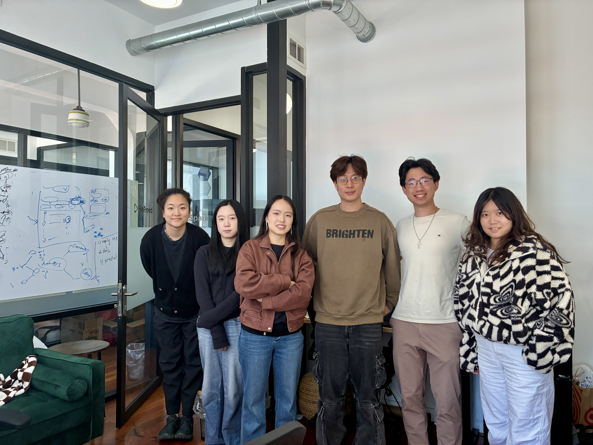
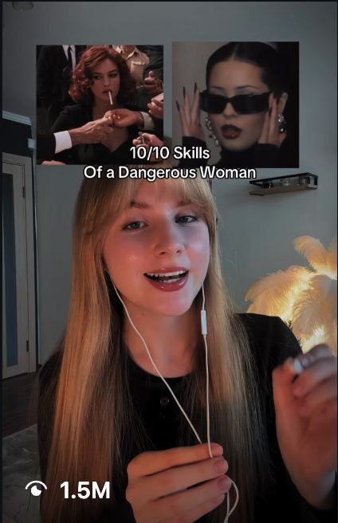
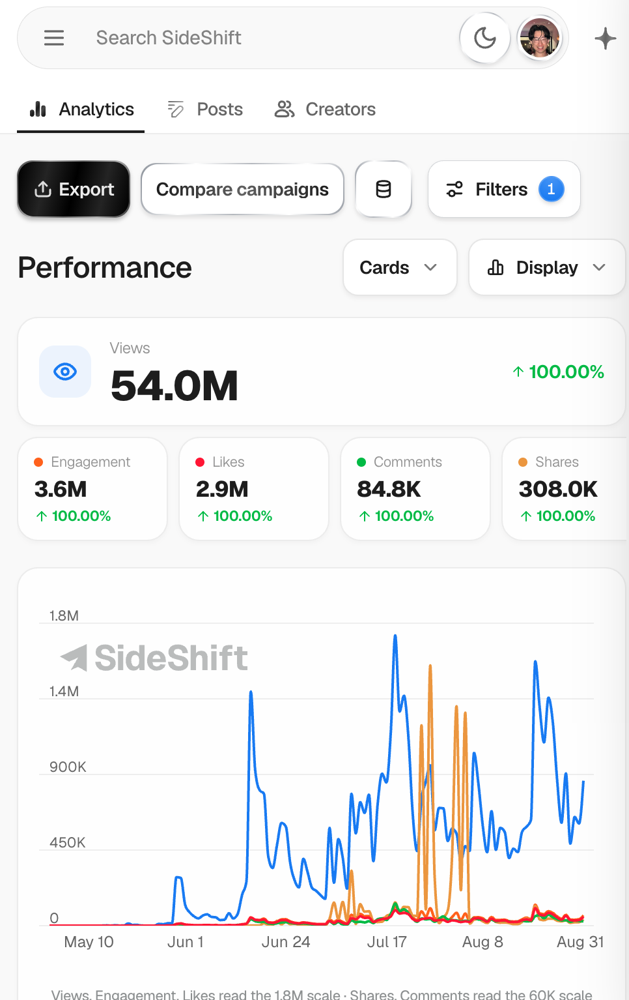
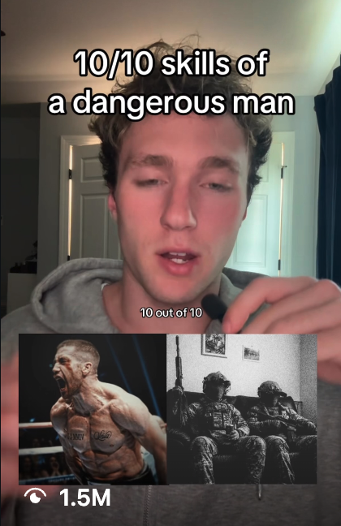
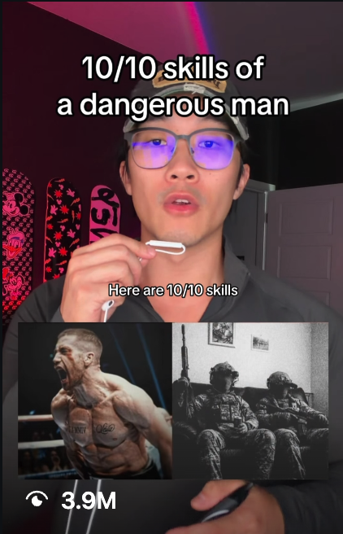
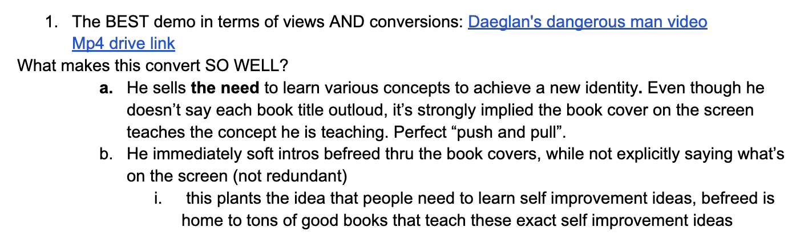

BeFreed · Growth & creator program · Feb–Aug 2026
120M views, and a program that kept running after I left
I didn't scale this program by doing more work myself. I scaled it by turning what I knew into systems other people could execute.
01 — What I walked into
A group of creators, not a system
I joined in February. There were 10–15 creators producing three or four videos a week, and a lot of those videos were doing about 1K views. The obvious read was that the creators needed to be better. The actual problem was that almost nothing around them was defined.
There was no warm-up process, so I spent time chasing creators to warm their accounts instead of having something repeatable that prepared them before they started producing. Sourcing leaned on a marketplace, which meant we sometimes ended up appeasing creators who were never going to be a fit. And the creators we did have weren't used to being coached hard — they came from a much looser UGC environment, and I was asking about lighting, framing, background, where they sat, how they delivered lines.
Some adapted. Some didn't. That sorting is where the coaching system started.
02 — The thing I got wrong first
Better execution wasn't enough
For two months I tried to make the existing strategy work better. Same BookTok-adjacent self-improvement content, cleaner. It didn't move.
Eventually the conclusion was uncomfortable: the creators weren't the ceiling. The creative premise was. You can't coach your way out of content that has no viral potential in it to begin with.
The strongest content wasn't selling “BeFreed has book summaries.” It was selling “I want to become this kind of person.”

03 — The May pivot
From book content to identity content
On May 1, I flew to San Francisco and pitched the team on a different creative direction: aspirational, visually distinctive, identity-driven. The format that carried it was a quadrant layout — images, aesthetic, subjects and language all signalling one specific kind of person.
The viewer is a college or post-grad person who wants to be intelligent, disciplined, cultured, interesting. They see the video and think that's who I want to be. BeFreed becomes the mechanism for getting there rather than the subject of the ad.
On May 12, Kate posted the first real proof: 1.2M views. I didn't know it was going to work. It was a hypothesis, and the market answered.

Kate · quadrant format
Campaign dashboard · May–Aug04 — The conversion mechanism
Push, then pull
One creator's script cracked the structure open. It sells the need to learn a set of concepts in order to become a different person, and only then does the product enter — not as an advertisement, but as the way the viewer personally consumes that knowledge.
Once it was written down as a mechanism instead of a lucky video, other creators could run it. 1.3M, then 1.1M from someone copying the format, then repeatedly across the roster. That's the difference between a viral video and an evergreen format.

Daeglan · the push-then-pull script
Edwin · same format
The internal note where the mechanism was written down05 — Turning it into leverage
Learn, diagnose, teach, document, delegate
A coach who could replace me
One teammate had real content experience but had never coached anyone. I taught her how to give feedback, when to push and when to reassure, which lever to pull first — then wrote it all into a How to Coach SOP so it wasn't stuck in conversation.
Stop flattening the inspiration
A scriptwriter was finding good references and then running them through ChatGPT, which sanded off everything that made them work. Rather than rewrite her scripts, I spent an hour teaching her how to modify an idea without diluting it.
Outreach that stopped getting ghosted
We read real email chains together and diagnosed the diction, what to reveal, what to emphasise, how to negotiate. Then I rewrote the templates and the SOP. Sourcing moved off the marketplace and onto the For You page.
An internal creator CRM
Coaches kept asking the same three questions: who's performing, what's working, who's slipping. I specced a tool that pulled TikTok and Instagram data every four hours and stored view snapshots, and worked with an engineer to ship it in July.
06 — The real test
What was left behind
By August the program had a creator cohort, a sourcing process, onboarding, a coaching process, a scripting process, a compensation structure, a CRM, two proven viral formats, and coaches who could run all of it. My last job was teaching the people taking over.
The test was never whether the program could produce viral videos while I was there. It was whether it could keep producing them after I left.
A note on the numbers: these are program-level campaign benchmarks across two campaigns, not a controlled before/after experiment. The “before” window includes some later activity from creators who stayed on the old structure.